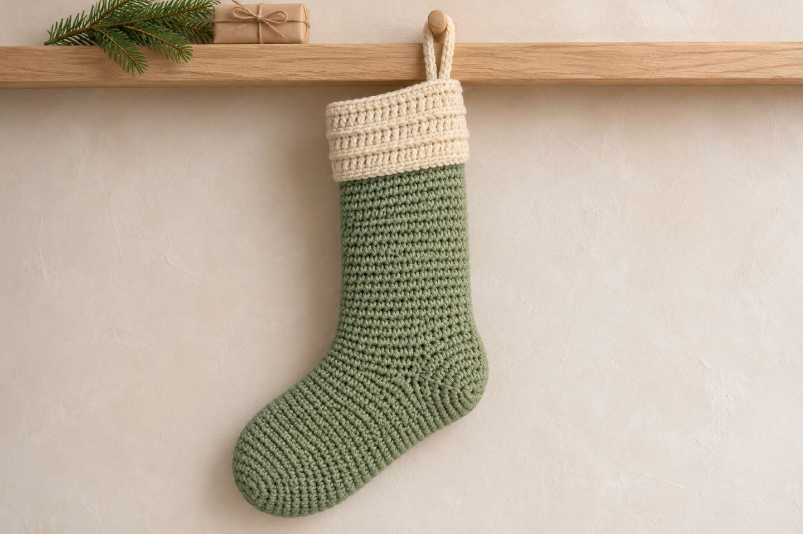
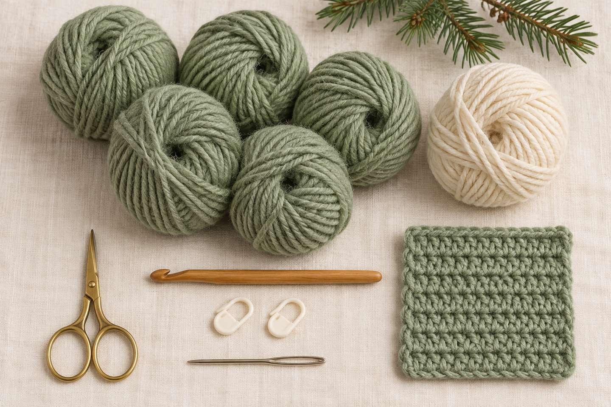
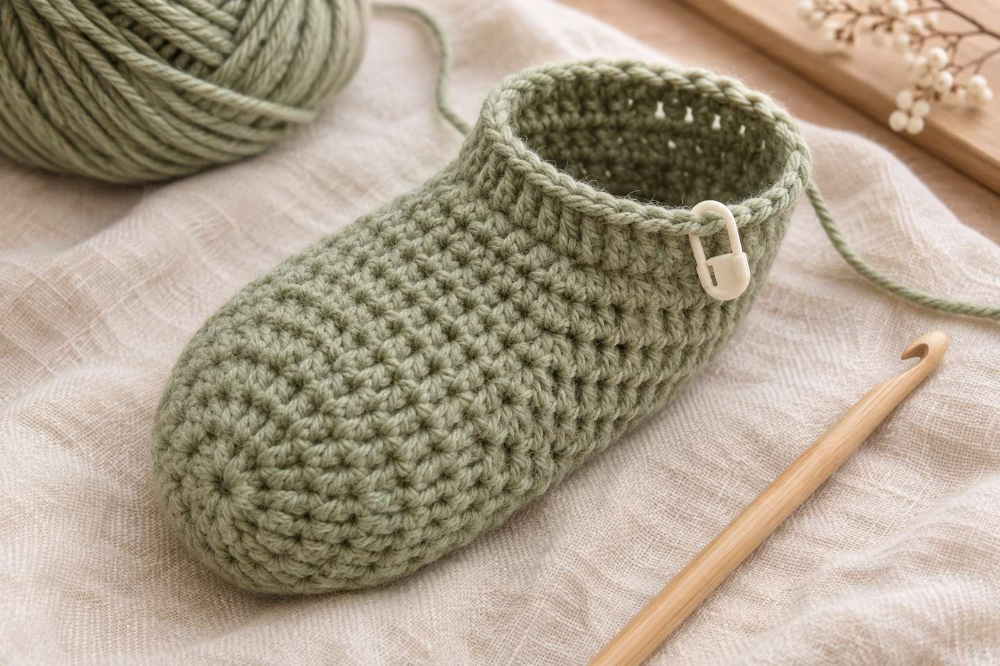
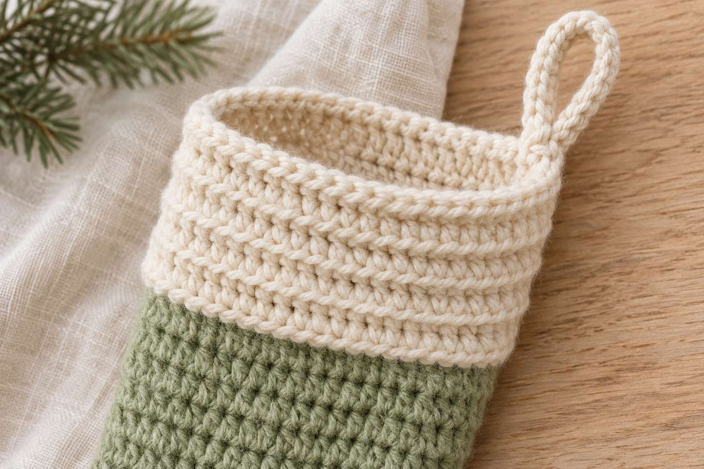
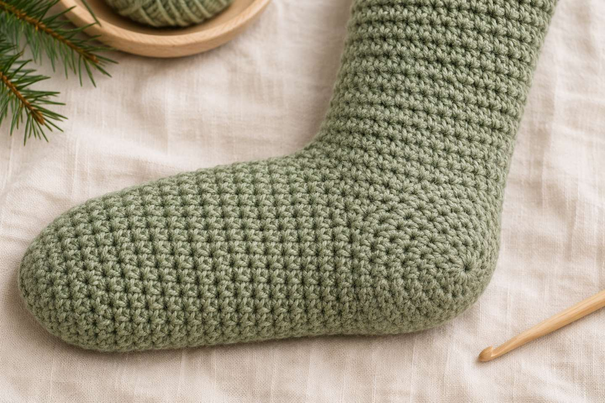

Weihnachtsstrumpf in einem Stück häkeln: großer Kaminstrumpf ohne Naht

Kurz gesagt
Einen Weihnachtsstrumpf kannst du in einem Stück häkeln, wenn du in Runden arbeitest: Du beginnst an der Spitze, häkelst Fuß und Schaft als Schlauch nach oben und lässt dabei eine Lücke aus Luftmaschen, in die zum Schluss die Ferse kommt. So gibt es keine Seitennaht. Für einen großen Kaminstrumpf (ca. 50 cm hoch, Richtwert) reichen halbe Stäbchen in Spiralrunden, mittelstarkes Garn und Nadel 5 mm – rechne mit etwa 8–10 Stunden.
Am Abend des 5. Dezember darf der Nikolausstrumpf schon hängen – am liebsten groß und am Kamin. Diesmal wollte ich einen Strumpf ohne Naht: Ich habe recherchiert, wie man einen Weihnachtsstrumpf in einem Stück häkelt, und vier Methoden für die Ferse verglichen. Daraus ist eine Anleitung für einen großen Kaminstrumpf in Spiralrunden entstanden, bei dem die Ferse erst zum Schluss eingehäkelt wird.
Wie häkelt man einen Strumpf in einem Stück?
Alle Methoden arbeiten in Runden, also als Schlauch ohne Seitennaht. Der Unterschied liegt in der Ferse – sie gibt dem Strumpf seine Knickform. In frei verfügbaren Anleitungen findest du vor allem diese vier Wege (Beispiele in den Quellen):
| Methode | So geht’s | Gut für |
|---|---|---|
| Ferse zum Schluss (englisch „afterthought heel“) | In einer Runde häkelst du über die Hälfte der Maschen Luftmaschen und überspringst diese Maschen. Am Ende häkelst du in die Öffnung Runden mit Abnahmen. | Einsteigerinnen mit Rundenerfahrung; Spitze und Ferse funktionieren gleich |
| Ferse in Reihen | Mitten im Stück wird die Ferse über einen Teil der Maschen hin und her gehäkelt, danach geht es in Runden weiter. | eine deutlich ausgeformte Ferse; etwas mehr Zählarbeit |
| Formferse durch Zu- und Abnahmen | Auf einer Seite werden in einigen Runden Maschen zugenommen und wieder abgenommen – ohne Faden abzuschneiden. | durchgehendes Häkeln in einem Rutsch; flachere Ferse |
| Sohle zuerst | Zuerst entsteht eine ovale Sohle rund um einen Luftmaschenanschlag, dann wird der Stiefel nach oben gehäkelt. | kleine Nikolausstiefel mit flachem Boden |
Warum die Ferse zum Schluss für einen großen Kaminstrumpf?
- Keine Naht: Der ganze Strumpf ist ein Schlauch – nichts muss zusammengenäht oder -gehäkelt werden.
- Eine Technik für zwei Stellen: Die Spitze entsteht mit Zunahmen, die Ferse mit Abnahmen nach demselben Muster.
- Leicht anzupassen: Die Länge änderst du über die Rundenzahl im Schaft, ohne die Ferse neu berechnen zu müssen.
- Gut für große Strümpfe: Die Maschenzahl bleibt vom Fuß bis zum Bündchen gleich – du häkelst einfach Runde um Runde.
Wie groß wird der Kaminstrumpf?

| Teil | Maschen / Runden | Maß (Richtwert) |
|---|---|---|
| Umfang | 64 hStb | ca. 46 cm (flach ca. 23 cm breit) |
| Fuß (Spitze bis Ferse) | 28 Runden + Ferse | ca. 34 cm |
| Schaft | 32 Runden | ca. 32 cm |
| Bündchen | 10 Runden | ca. 10 cm |
| Höhe (Bündchen bis Ferse) | ca. 50 cm |
Anleitung: großer Kaminstrumpf in einem Stück
- Größe
- ca. 50 cm hoch, ca. 23 cm breit, Fuß ca. 34 cm (Richtwerte)
- Zeit
- ca. 8–10 Stunden (Richtwert)
- Niveau
- Anfängerin mit Rundenerfahrung (Magic Ring, halbe Stäbchen, Zu- und Abnahmen)
- Garn
- mittelstarkes Garn (Aran/Worsted), z. B. Wollmischung oder Baumwolle; geschätzt ca. 450 g in der Hauptfarbe und ca. 80 g in Creme – lieber ein Knäuel mehr kaufen
- Maschenprobe
- 14 hStb × 10 Runden = 10 × 10 cm
- Zubehör
- Häkelnadel 5 mm, 2 Maschenmarkierer, Vernähnadel, Schere
Abkürzungen
MR = Magic Ring · hStb = halbes Stäbchen · fM = feste Masche · Lm = Luftmasche · Km = Kettmasche · Zun = Zunahme (2 hStb in eine Masche) · Abn = Abnahme (2 hStb zusammen abmaschen) · hMg = nur ins hintere Maschenglied. Alle Abkürzungen und Häkelschrift-Zeichen findest du in der Abkürzungs-Übersicht, den Magic Ring und Spiralrunden in den Häkel-Basics. Bei 70 Runden hilft der Maschenzähler beim Mitzählen.
1. Spitze (Hauptfarbe)

- Runde 1: 8 hStb in den MR (8)
- Runde 2: 8× Zun (16)
- Runde 3: 8× (1 hStb, Zun) (24)
- Runde 4: 8× (2 hStb, Zun) (32)
- Runde 5: 8× (3 hStb, Zun) (40)
- Runde 6: 40 hStb (40)
- Runde 7: 8× (4 hStb, Zun) (48)
- Runde 8: 48 hStb (48)
- Runde 9: 8× (5 hStb, Zun) (56)
- Runde 10: 56 hStb (56)
- Runde 11: 8× (6 hStb, Zun) (64)
- Runde 12: 64 hStb (64)
Gehäkelt wird in Spiralrunden ohne Kettmasche am Rundenende – der Maschenmarkierer zeigt dir den Rundenanfang.
2. Fuß und Fersenöffnung
- Runde 13–26: 64 hStb (64)
- Runde 27: 32 hStb, dann 32 Lm locker häkeln und die nächsten 32 Maschen überspringen (32 hStb + 32 Lm)
- Runde 28: 32 hStb, dann in jede Lm 1 hStb (64)
Die übersprungenen Maschen und die Luftmaschenkette bilden die Öffnung, in die du zum Schluss die Ferse häkelst. Häkle die Luftmaschen wirklich locker, sonst zieht sich der Strumpf an dieser Stelle zusammen.
3. Schaft
- Runde 29–60: 64 hStb (64)
Das sind 32 Runden. Für einen kürzeren oder längeren Strumpf häkelst du hier einfach weniger oder mehr Runden.
4. Bündchen (Creme)

- Runde 61: zu Creme wechseln, 64 fM (64)
- Runde 62–70: 64 hStb nur ins hintere Maschenglied (64)
Zum Schluss 2 Km in die nächsten Maschen häkeln, damit die Stufe der Spiralrunden verschwindet, und den Faden vernähen.
5. Ferse (Hauptfarbe, zum Schluss)

- Runde 1: an einer Ecke der Öffnung anschlingen, 32 hStb in die übersprungenen Maschen und 32 hStb in die Unterseite der Luftmaschenkette (64)
- Runde 2: 8× (6 hStb, Abn) (56)
- Runde 3: 56 hStb (56)
- Runde 4: 8× (5 hStb, Abn) (48)
- Runde 5: 48 hStb (48)
- Runde 6: 8× (4 hStb, Abn) (40)
- Runde 7: 40 hStb (40)
- Runde 8: 8× (3 hStb, Abn) (32)
- Runde 9: 8× (2 hStb, Abn) (24)
- Runde 10: 8× (1 hStb, Abn) (16)
- Runde 11: 8× Abn (8)
Faden abschneiden, durch die letzten 8 Maschen ziehen, festziehen und vernähen. Kleine Löcher an den beiden Ecken der Öffnung schließt du mit dem Anfangsfaden.
6. Aufhänger
- Oben am Bündchen über der Ferse anschlingen, 20 Lm häkeln und mit 1 Km in dieselbe Masche schließen (Schlaufe)
- Ca. 26 fM um die Schlaufe häkeln, mit 1 Km beenden (ca. 26)
Gut vernähen – am Kamin trägt der Aufhänger das ganze Gewicht des gefüllten Strumpfs.
Tipp: Setze in Runde 27 einen zweiten Maschenmarkierer an die erste übersprungene Masche. So findest du die Fersenöffnung später sofort wieder.
Kann ich den Strumpf größer oder kleiner häkeln?
- Länger oder kürzer: Häkle im Schaft (Runde 29–60) mehr oder weniger Runden. Jede Runde macht den Strumpf um etwa 1 cm länger (Richtwert).
- Längerer Fuß: Häkle in Runde 13–26 mehr Runden, bevor die Fersenöffnung kommt.
- Breiter oder schmaler: Ändere die Maschenzahl in Achterschritten, zum Beispiel 56 statt 64: Dann hörst du in der Spitze nach Runde 10 auf, häkelst in Runde 27 über 28 Maschen Luftmaschen, häkelst in der ersten Fersenrunde 56 Maschen und machst danach mit Fersenrunde 4 weiter.
- Anderes Garn: Mit dickerem Garn (Chunky, Nadel 6–7 mm) wird der Strumpf bei gleicher Anleitung größer, mit dünnerem Garn kleiner.
Schaffe ich den Kaminstrumpf bis zum 6. Dezember?
Ja, wenn du jetzt anfängst. Bei ca. 8–10 Stunden (Richtwert) reichen zwei bis drei Abende pro Woche:
| Woche | Was |
|---|---|
| 1 | Maschenprobe, Spitze, Fuß und Fersenöffnung |
| 2 | Schaft bis etwa Runde 45 |
| 3 | Schaft fertig, Bündchen |
| 4 | Ferse, Aufhänger, Name aufsticken – und am 5. Dezember aufhängen |
Noch mehr für die Adventszeit
Kleine Füllideen zum Selbermachen gibt es bei den Mini-Anhängern für den Adventskalender, und im Beitrag Weihnachten häkeln 2026 stehen Farbideen für die ganze Weihnachtsdeko.
Und du? Häkelst du lieber in Runden oder in Reihen? Zeig mir deinen Kaminstrumpf auf Instagram oder TikTok! 🎅
Häufige Fragen zum Weihnachtsstrumpf in einem Stück
Kann man einen Weihnachtsstrumpf in einem Stück häkeln?
Ja. Du häkelst in Runden von der Spitze nach oben, lässt für die Ferse eine Lücke aus Luftmaschen und häkelst die Ferse zum Schluss ein. So gibt es keine Seitennaht.
Wie funktioniert die Ferse zum Schluss?
In einer Runde häkelst du über die Hälfte der Maschen locker Luftmaschen und überspringst diese Maschen. Wenn Schaft und Bündchen fertig sind, häkelst du in die Öffnung Runden mit Abnahmen, ähnlich wie bei der Spitze.
Wie groß wird der gehäkelte Kaminstrumpf?
Etwa 50 cm hoch, flach ca. 23 cm breit, mit einem Fuß von ca. 34 cm. Das sind Richtwerte für eine Maschenprobe von 14 halben Stäbchen × 10 Runden = 10 × 10 cm.
Wie viel Garn brauche ich für einen großen Weihnachtsstrumpf?
Geschätzt ca. 450 g mittelstarkes Garn (Aran/Worsted) in der Hauptfarbe und ca. 80 g in Creme fürs Bündchen. Kauf lieber ein Knäuel mehr.
Welche Methode ist am einfachsten?
Wenn du schon in Runden häkeln kannst, ist die Ferse zum Schluss am einfachsten, weil sie wie die Spitze funktioniert. Wer nicht in Runden häkeln möchte, kann einen Strumpf auch aus zwei flachen Teilen häkeln und zusammenhäkeln – dann gibt es allerdings eine Naht.